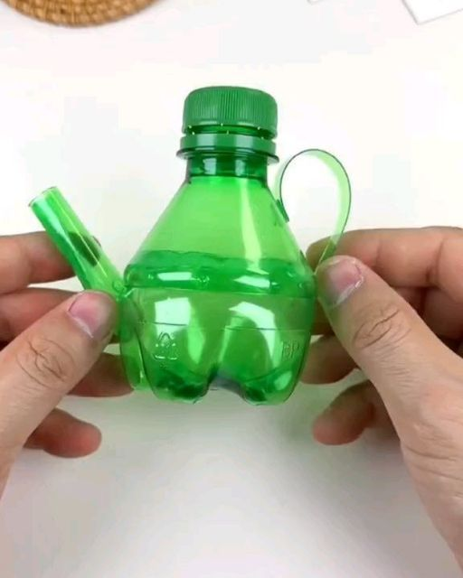

How this product helps
This DIY project significantly benefits the environment by directly addressing plastic waste, promoting resource conservation, and fostering sustainable habits. By repurposing plastic bottles, it effectively reduces the volume of waste sent to landfills and minimizes pollution in natural environments. This approach also conserves valuable resources by decreasing the demand for new plastic production, which typically requires substantial raw materials and energy. Moreover, engaging in such creative reuse initiatives teaches practical skills and cultivates an appreciation for sustainability, especially among younger audiences, thereby encouraging a more environmentally conscious mindset for the future.
Step by Step Tutorial
- Cut the Bottle Base
Take your plastic bottle.
Use a knife for an initial incision, then scissors to cut off the entire bottom section. This forms your kettle's main body.
- Form the Spout
Grab the cut-off bottom piece.
With scissors, snip out a small, triangular or rounded section from its edge to create the spout. Gently bend if needed for shape.
- Attach the Spout
Apply hot glue along the spout's straight edge.
Carefully press the spout onto the side of the main kettle body until the glue sets.
- Create and Attach the Handle
Cut a long, thin plastic strip from bottle scraps for the handle.
Apply hot glue to both ends of the strip.
Attach one end to the top-back of the kettle and the other to the side, forming a loop. Hold until secure.
- Add Finishing Touches (Optional)
Once all glue is dry, your kettle is ready!
Decorate it with permanent markers, plastic-friendly paints, glitter, or stickers to personalize your cute creation.
